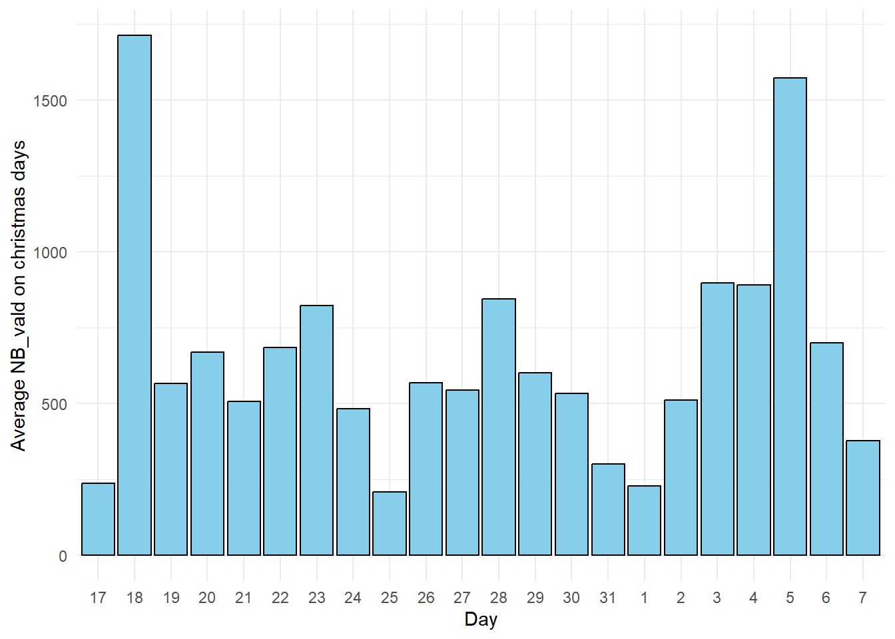

Rows: 825698 Columns: 8
── Column specification ────────────────────────────────────────────────────────
Delimiter: "\t"
chr (5): JOUR, CODE_STIF_RES, CODE_STIF_ARRET, LIBELLE_ARRET, CATEGORIE_TITRE
dbl (3): CODE_STIF_TRNS, ID_REFA_LDA, NB_VALD
ℹ Use `spec()` to retrieve the full column specification for this data.
ℹ Specify the column types or set `show_col_types = FALSE` to quiet this message.
Rows: 866694 Columns: 8
── Column specification ────────────────────────────────────────────────────────
Delimiter: "\t"
chr (5): JOUR, CODE_STIF_RES, CODE_STIF_ARRET, LIBELLE_ARRET, CATEGORIE_TITRE
dbl (3): CODE_STIF_TRNS, ID_REFA_LDA, NB_VALD
ℹ Use `spec()` to retrieve the full column specification for this data.
ℹ Specify the column types or set `show_col_types = FALSE` to quiet this message.
Rows: 903991 Columns: 8
── Column specification ────────────────────────────────────────────────────────
Delimiter: "\t"
chr (5): JOUR, CODE_STIF_RES, CODE_STIF_ARRET, LIBELLE_ARRET, CATEGORIE_TITRE
dbl (3): CODE_STIF_TRNS, ID_REFA_LDA, NB_VALD
ℹ Use `spec()` to retrieve the full column specification for this data.
ℹ Specify the column types or set `show_col_types = FALSE` to quiet this message.
Warning: One or more parsing issues, call `problems()` on your data frame for details,
e.g.:
dat <- vroom(...)
problems(dat)
Rows: 934851 Columns: 8
── Column specification ────────────────────────────────────────────────────────
Delimiter: "\t"
chr (3): JOUR, LIBELLE_ARRET, CATEGORIE_TITRE
dbl (5): CODE_STIF_TRNS, CODE_STIF_RES, CODE_STIF_ARRET, ID_REFA_LDA, NB_VALD
ℹ Use `spec()` to retrieve the full column specification for this data.
ℹ Specify the column types or set `show_col_types = FALSE` to quiet this message.
Rows: 953454 Columns: 8
── Column specification ────────────────────────────────────────────────────────
Delimiter: "\t"
chr (5): JOUR, CODE_STIF_RES, CODE_STIF_ARRET, LIBELLE_ARRET, CATEGORIE_TITRE
dbl (3): CODE_STIF_TRNS, ID_REFA_LDA, NB_VALD
ℹ Use `spec()` to retrieve the full column specification for this data.
ℹ Specify the column types or set `show_col_types = FALSE` to quiet this message.
Rows: 887493 Columns: 8
── Column specification ────────────────────────────────────────────────────────
Delimiter: "\t"
chr (5): JOUR, CODE_STIF_RES, CODE_STIF_ARRET, LIBELLE_ARRET, CATEGORIE_TITRE
dbl (3): CODE_STIF_TRNS, ID_REFA_LDA, NB_VALD
ℹ Use `spec()` to retrieve the full column specification for this data.
ℹ Specify the column types or set `show_col_types = FALSE` to quiet this message.
Rows: 1054012 Columns: 8
── Column specification ────────────────────────────────────────────────────────
Delimiter: "\t"
chr (5): JOUR, CODE_STIF_RES, CODE_STIF_ARRET, LIBELLE_ARRET, CATEGORIE_TITRE
dbl (3): CODE_STIF_TRNS, ID_REFA_LDA, NB_VALD
ℹ Use `spec()` to retrieve the full column specification for this data.
ℹ Specify the column types or set `show_col_types = FALSE` to quiet this message.
Rows: 1064019 Columns: 8
── Column specification ────────────────────────────────────────────────────────
Delimiter: "\t"
chr (5): JOUR, CODE_STIF_RES, CODE_STIF_ARRET, LIBELLE_ARRET, CATEGORIE_TITRE
dbl (3): CODE_STIF_TRNS, ID_REFA_LDA, NB_VALD
ℹ Use `spec()` to retrieve the full column specification for this data.
ℹ Specify the column types or set `show_col_types = FALSE` to quiet this message.
Rows: 1084281 Columns: 8
── Column specification ────────────────────────────────────────────────────────
Delimiter: "\t"
chr (5): JOUR, CODE_STIF_RES, CODE_STIF_ARRET, LIBELLE_ARRET, CATEGORIE_TITRE
dbl (3): CODE_STIF_TRNS, ID_REFA_LDA, NB_VALD
ℹ Use `spec()` to retrieve the full column specification for this data.
ℹ Specify the column types or set `show_col_types = FALSE` to quiet this message.
Warning: One or more parsing issues, call `problems()` on your data frame for details,
e.g.:
dat <- vroom(...)
problems(dat)
Rows: 1088334 Columns: 8
── Column specification ────────────────────────────────────────────────────────
Delimiter: "\t"
chr (3): JOUR, LIBELLE_ARRET, CATEGORIE_TITRE
dbl (5): CODE_STIF_TRNS, CODE_STIF_RES, CODE_STIF_ARRET, ID_REFA_LDA, NB_VALD
ℹ Use `spec()` to retrieve the full column specification for this data.
ℹ Specify the column types or set `show_col_types = FALSE` to quiet this message.
Warning: One or more parsing issues, call `problems()` on your data frame for details,
e.g.:
dat <- vroom(...)
problems(dat)
Rows: 1105947 Columns: 8
── Column specification ────────────────────────────────────────────────────────
Delimiter: ";"
chr (3): JOUR, LIBELLE_ARRET, CATEGORIE_TITRE
dbl (5): CODE_STIF_TRNS, CODE_STIF_RES, CODE_STIF_ARRET, lda, NB_VALD
ℹ Use `spec()` to retrieve the full column specification for this data.
ℹ Specify the column types or set `show_col_types = FALSE` to quiet this message.
X2023_s1_NB_FER <-read.csv("data/validations-reseau-ferre-nombre-validations-par-jour-1er-semestre.csv", sep =";", header =TRUE)X2023_s1_NB_FER$JOUR <-as.Date(X2023_s1_NB_FER$JOUR)# Format 'JOUR' column to the desired format "%d/%m/%Y"X2023_s1_NB_FER$JOUR <-format(X2023_s1_NB_FER$JOUR, "%d/%m/%Y")data_frames_list <-list( X2017_S2_NB_FER, X2018_S1_NB_FER, X2018_S2_NB_Fer, X2019_S1_NB_FER, X2019_S2_NB_FER, X2020_S1_NB_FER, X2020_S2_NB_FER, X2021_S1_NB_FER, X2021_S2_NB_FER, X2022_S1_NB_FER, X2022_S2_NB_FER, X2023_s1_NB_FER)data_frames_list_names <-list("X2017_S2_NB_FER", "X2018_S1_NB_FER", "X2018_S2_NB_Fer","X2019_S1_NB_FER", "X2019_S2_NB_FER", "X2020_S1_NB_FER", "X2020_S2_NB_FER","X2021_S1_NB_FER","X2021_S2_NB_FER", "X2022_S1_NB_FER", "X2022_S2_NB_FER", "X2023_s1_NB_FER")
We tried to join all datasets, however some of the columns had more than one data type, therefore transformed all entries into the same data type. Datasets contained the same column “ID_REFA_LDA” but with different labels, therefore relabeled this column in some of the datasets so it had the same label throughout all datasets. When the values from $CODE_STIF_RES and $CODE_STIF_ARRET are equal to “ND” the value from LIBELLE_ARRET is “Inconnu”: as neither the departure station nor the arrival station are known, it did not make sense to keep these record entries, therefore eliminated these rows Converted the rest of the entries for columns $CODE_STIF_RES and $CODE_STIF_ARRET to numerical values. For column $CATEGORIE_TITRE, verified there were entries with value “?” and entries with value “NON DEFINI”: replaced all values “?” to “NON DEFINI”. Then it was possible to join all the datasets since they were represented with the same type.
We noticed an inconsistency in the date format, as for all years previous to 2023 the format was DD/MM/YYYY and for 2023 the format was YYYY/MM/DD. As such, we decided to alter the date format for the 2023 entries to match the rest.
# Obtain columns with more than one typeresults <-list()for (df in data_frames_list) {for (col innames(df)) { col_class <-sapply(df[[col]], class)[1]if (!(col %in%names(results))) { results[[col]] <-NULL } results[[col]] <-append(results[[col]], col_class) }}results <-lapply(results, unique)multi_class_columns <-names(results)[sapply(results, length) >1]print(multi_class_columns)
#Remove the rows with the value "Inconnu" in the column LIBELLE_ARRETdata_frames_list <-lapply(data_frames_list, function(df) {subset(df, LIBELLE_ARRET !="Inconnu")})#Covert columns to numericdata_frames_list <-lapply(data_frames_list, function(df) { df$CODE_STIF_RES <-as.numeric(df$CODE_STIF_RES) df$CODE_STIF_ARRET <-as.numeric(df$CODE_STIF_ARRET)return(df)})#Rename the columns called "lda" to "ID_REFA_LDA"data_frames_list <-lapply(data_frames_list, function(df) {if ("lda"%in%names(df)) { df <-rename(df, ID_REFA_LDA = lda) }return(df)})#Convert JOUR column from 2023 dataset to day/month/year#Combine all datasets in one combined_df <-bind_rows(data_frames_list)#Replace the registers with "?" in column "CATEGORIE_TITRE" for "NON DEFINI"combined_df <-mutate(combined_df, CATEGORIE_TITRE =ifelse(CATEGORIE_TITRE =="?", "NON DEFINI", CATEGORIE_TITRE))
Convert all entries of column JOUR to the format day/month/year
In order to get a better understanding of the data we are going to explore the existing features by analyzing their distributions.
Firstly, since each line represents the number of passenger validations per day, per stop, and per ticket on the rail network, we realize that to verify if any outlier exists, it is necessary to analyze all distributions based on the NB_VALD feature.
We start by verifing what is the number of unique values for each column.
It is visible that the features CODE_STIF_TRNS, CODE_STIF_RES and CATEGORIE_TITRE are the ones with a small number of unique values so for that we can create a bar plot in order to analyse them.
CODE_STIF_TRNS plot:
combined_df$CODE_STIF_TRNS <-factor(combined_df$CODE_STIF_TRNS)# Group by 'CODE_STIF_TRNS' and calculate the sum of 'NB_VALID' for each groupsum_by_TRNS <- combined_df %>%group_by(CODE_STIF_TRNS) %>%summarise(Sum_NB_VALD =sum(NB_VALD, na.rm =TRUE))# Create a bar plot showing the sum of 'NB_VALD' for each 'CODE_STIF_TRNS'ggplot(sum_by_TRNS, aes(x = CODE_STIF_TRNS, y = Sum_NB_VALD)) +geom_bar(stat ="identity", fill ="skyblue", color ="black") +labs(title ="Sum of NB_VALD by CODE_STIF_TRNS", x ="CODE_STIF_TRNS", y ="Sum of NB_VALD") +theme(axis.text.x =element_text(angle =90, vjust =0.5, hjust =1)) +scale_y_continuous(labels =function(x) format(x, scientific =FALSE))
Feature “CODE_STIF_TRNS” takes only 3 possible values and after plotting their distribution according to the number of validations, we can see is an imbalance between them as there are considerably more entries for value “100” than for values “800” and “810”. However, we did not consider this difference to be problematic as there is still a great number of validations for the last two values.
CODE_STIF_RES plot :
combined_df$CODE_STIF_RES <-factor(combined_df$CODE_STIF_RES)# Group by 'CODE_STIF_RES' and calculate the sum of 'NB_VALID' for each groupsum_by_TRNS <- combined_df %>%group_by(CODE_STIF_RES) %>%summarise(Sum_NB_VALD =sum(NB_VALD, na.rm =TRUE))# Create a bar plot showing the sum of 'NB_VALD' for each 'CODE_STIF_RES'ggplot(sum_by_TRNS, aes(x = CODE_STIF_RES, y = Sum_NB_VALD)) +geom_bar(stat ="identity", fill ="skyblue", color ="black") +labs(title ="Sum of NB_VALD by CODE_STIF_RES", x ="CODE_STIF_RES", y ="Sum of NB_VALD") +theme(axis.text.x =element_text(angle =90, vjust =0.5, hjust =1)) +scale_y_continuous(labels =function(x) format(x, scientific =FALSE))
Observing the distribution of values for feature “CODE_STIF_RES”, we verified a significant discrepancy between the number of passenger validations for value “110” and the number of passenger validations for all other possible values for “CODE_STIF_RES”, among which the lowest numbers of validations are for value “800” and “851”.
CATEGORIE_TITRE plot:
# Group by 'CATEGORIE_TITRE' and calculate the sum of 'NB_VALID' for each groupsum_by_TRNS <- combined_df %>%group_by(CATEGORIE_TITRE) %>%summarise(Sum_NB_VALD =sum(NB_VALD, na.rm =TRUE))# Create a bar plot showing the sum of 'NB_VALD' for each 'CATEGORIE_TITRE'ggplot(sum_by_TRNS, aes(x = CATEGORIE_TITRE, y = Sum_NB_VALD)) +geom_bar(stat ="identity", fill ="skyblue", color ="black") +labs(title ="Sum of NB_VALD by CATEGORIE_TITRE", x ="CATEGORIE_TITRE", y ="Sum of NB_VALD") +theme(axis.text.x =element_text(angle =90, vjust =0.5, hjust =1)) +scale_y_continuous(labels =function(x) format(x, scientific =FALSE))
Regarding the distribution of the number of passenger validations for each of the eight different transportation titles, that is, for each value in column “CATEGORIE_TITRE”, we can observe there are substantially more validations for the title “NAVIGO” than for the rest, with title “IMAGINE R” coming in second. On the other hand, title “NAVIGO JOUR” shows the lowest number of validations and as such, we consider it to be an outlier.
For columns CODE_STIF_ARRET, LIBELLE_ARRET and ID_REFA_LDA, as the number of unique values was higher and therefore difficulted the visual analysis of the graphics, we plotted two diferent graphs for the top and bottom 5 values with the highest and lowest numbers of passenger validations, respectively.
CODE_STIF_ARRET
combined_df$CODE_STIF_ARRET <-factor(combined_df$CODE_STIF_ARRET)# Group by 'CODE_STIF_ARRET' and calculate the sum of 'NB_VALD' for each groupsum_by_TRNS <- combined_df %>%group_by(CODE_STIF_ARRET) %>%summarise(Sum_NB_VALD =sum(NB_VALD, na.rm =TRUE)) %>%top_n(5, Sum_NB_VALD) # Select the top 5 categories# Create a bar plot showing the sum of 'NB_VALD' for the top 5 'CODE_STIF_ARRET' categoriesggplot(sum_by_TRNS, aes(x =reorder(CODE_STIF_ARRET, -Sum_NB_VALD), y = Sum_NB_VALD)) +geom_bar(stat ="identity", fill ="skyblue", color ="black") +labs(title ="Top 5 Sum of NB_VALD by CODE_STIF_ARRET", x ="CODE_STIF_ARRET", y ="Sum of NB_VALD") +theme(axis.text.x =element_text(angle =90, vjust =0.5, hjust =1)) +scale_y_continuous(labels =function(x) format(x, scientific =FALSE))
# Group by 'CODE_STIF_ARRET' and calculate the sum of 'NB_VALD' for each groupsum_by_ARRET <- combined_df %>%group_by(CODE_STIF_ARRET) %>%summarise(Sum_NB_VALD =sum(NB_VALD, na.rm =TRUE)) %>%arrange(Sum_NB_VALD) %>%slice_head(n =5) # Select the bottom 5 categories# Create a bar plot showing the sum of 'NB_VALD' for the bottom 5 'CODE_STIF_ARRET' categoriesggplot(sum_by_ARRET, aes(x =reorder(CODE_STIF_ARRET, Sum_NB_VALD), y = Sum_NB_VALD)) +geom_bar(stat ="identity", fill ="skyblue", color ="black") +labs(title ="Bottom 5 Sum of NB_VALD by CODE_STIF_ARRET", x ="CODE_STIF_ARRET", y ="Sum of NB_VALD") +theme(axis.text.x =element_text(angle =90, vjust =0.5, hjust =1)) +scale_y_continuous(labels =function(x) format(x, scientific =FALSE))
For column “CODE_STIF_ARRET”, the top 5 values with the highest number of validations are “393”, “769”, “163”, “306” and “822”, whereas the bottom 5 are “921”, “535”, “976”, “341” and finally “19”, which showed a particularly low number of validations.
LIBELLE_ARRET
# Group by 'LIBELLE_ARRET' and calculate the sum of 'NB_VALD' for each groupsum_by_TRNS <- combined_df %>%group_by(LIBELLE_ARRET) %>%summarise(Sum_NB_VALD =sum(NB_VALD, na.rm =TRUE)) %>%top_n(5, Sum_NB_VALD) # Select the top 5 categories# Create a bar plot showing the sum of 'NB_VALD' for the top 5 'LIBELLE_ARRET' categoriesggplot(sum_by_TRNS, aes(x =reorder(LIBELLE_ARRET, -Sum_NB_VALD), y = Sum_NB_VALD)) +geom_bar(stat ="identity", fill ="skyblue", color ="black") +labs(title ="Top 5 Sum of NB_VALD by LIBELLE_ARRET", x ="LIBELLE_ARRET", y ="Sum of NB_VALD") +theme(axis.text.x =element_text(angle =90, vjust =0.5, hjust =1)) +scale_y_continuous(labels =function(x) format(x, scientific =FALSE))
# Group by 'LIBELLE_ARRET' and calculate the sum of 'NB_VALD' for each groupsum_by_ARRET <- combined_df %>%group_by(LIBELLE_ARRET) %>%summarise(Sum_NB_VALD =sum(NB_VALD, na.rm =TRUE)) %>%arrange(Sum_NB_VALD) %>%slice_head(n =5) # Select the bottom 5 categories# Create a bar plot showing the sum of 'NB_VALD' for the bottom 5 'LIBELLE_ARRET' categoriesggplot(sum_by_ARRET, aes(x =reorder(LIBELLE_ARRET, Sum_NB_VALD), y = Sum_NB_VALD)) +geom_bar(stat ="identity", fill ="skyblue", color ="black") +labs(title ="Bottom 5 Sum of NB_VALD by LIBELLE_ARRET", x ="LIBELLE_ARRET", y ="Sum of NB_VALD") +theme(axis.text.x =element_text(angle =90, vjust =0.5, hjust =1)) +scale_y_continuous(labels =function(x) format(x, scientific =FALSE))
For column “LIBELLE_ARRET”, the top 5 values with the highest numer of validations are “SAINT-LAZARE”, “LA DEFENSE-GRANDE ARCHE”, “GARE DE LYON”, “MONTPARNASSE” and “GARE DU NORD”, whereas the bottom 5 are “Allée Royale T13”, “PLESSIS CHENET”, “THIEUX NANTOUIL”, “SANTEUIL LE PER” and “MONTGEROULT”. There is no big discrepancy in the number of validations among the top 5 values and among the bottom 5 values, but there is a very significant imbalance between the top and bottom, with numbers ranging from 100M to over 200M validations for the top values, and numbers only reaching up to 12.500 validations in the bottom values.
ID_REFA_LDA
# Group by 'ID_REFA_LDA' and calculate the sum of 'NB_VALD' for each groupsum_by_TRNS <- combined_df %>%group_by(ID_REFA_LDA) %>%summarise(Sum_NB_VALD =sum(NB_VALD, na.rm =TRUE)) %>%top_n(5, Sum_NB_VALD) # Select the top 5 categories# Create a bar plot showing the sum of 'NB_VALD' for the top 5 'ID_REFA_LDA' categoriesggplot(sum_by_TRNS, aes(x =reorder(ID_REFA_LDA, -Sum_NB_VALD), y = Sum_NB_VALD)) +geom_bar(stat ="identity", fill ="skyblue", color ="black") +labs(title ="Top 5 Sum of NB_VALD by ID_REFA_LDA", x ="ID_REFA_LDA", y ="Sum of NB_VALD") +theme(axis.text.x =element_text(angle =90, vjust =0.5, hjust =1)) +scale_y_continuous(labels =function(x) format(x, scientific =FALSE))
# Group by 'ID_REFA_LDA' and calculate the sum of 'NB_VALD' for each groupsum_by_ARRET <- combined_df %>%group_by(ID_REFA_LDA) %>%summarise(Sum_NB_VALD =sum(NB_VALD, na.rm =TRUE)) %>%arrange(Sum_NB_VALD) %>%slice_head(n =5) # Select the bottom 5 categories# Create a bar plot showing the sum of 'NB_VALD' for the bottom 5 'ID_REFA_LDA' categoriesggplot(sum_by_ARRET, aes(x =reorder(ID_REFA_LDA, Sum_NB_VALD), y = Sum_NB_VALD)) +geom_bar(stat ="identity", fill ="skyblue", color ="black") +labs(title ="Bottom 5 Sum of NB_VALD by ID_REFA_LDA", x ="ID_REFA_LDA", y ="Sum of NB_VALD") +theme(axis.text.x =element_text(angle =90, vjust =0.5, hjust =1)) +scale_y_continuous(labels =function(x) format(x, scientific =FALSE))
For column “ID_REFA_LDA”, the top 5 values with the highest numer of validations are “71517”, “73626”, “71370”, “73794” and “71410”, whereas the bottom 5 are “480950”, “480951”, “59450”, “64049” and “425819”. Again, there is no big discrepancy in the number of validations among the top 5 values and among the bottom 5 values, but there is a very significant imbalance between the top and bottom, with numbers ranging from 150M to 250M validations for the top values, and numbers reaching only up to 40.000 validations in the bottom values.
Even though we identified some discrepancies in the data, we opted not to remove what we considered to be outliers, firstly because they still represent a great volume of data and secondly because with this project we aim to analyse patterns as well as inconsistencies in these patterns and, as such, we considered the outliers to be valuable to the data exploration.
However, we still proceeded to a reduction of the data, keeping only 100.000 entries, given the whole dataset was too large to process in our personal computers and required a considerable running time. Note that we maintained the original distribution of each month and year, to ensure a good balance in the resulting subset.
# Calculate the proportion of records for each YearMonthcombined_df <- combined_df %>%mutate(JOUR =as.Date(JOUR, format ="%d/%m/%Y"), YearMonth =format(JOUR, "%m/%Y"))combined_df
n <-nrow(combined_df)# Perform stratified samplingset.seed(123) # for reproducibilitysubset_df <- combined_df %>%group_by(YearMonth) %>%sample_n(size = (n()/n) *100000 )# Now, subset_df is your subset data frame with 100,000 recordssubset_df
#final_df <- data.frame(lapply(final_df, function(x) gsub("\n|\r", " ", x)))# Now write the dataframe to a file#write.table(final_df, file = "final.csv", sep = ";", row.names = FALSE)
Note: The code cells above were executed to reduce the initial dataset which was too large to manipulate. As the dataset partition is done randomly, if the cells are executed they will return a diferente subset than the one we used to perform data exploration and analysis. For this reason, we kept a final dataset in csv format, “final.csv”, to ensure we were always working with the same data.
final <-read.csv("final.csv", sep =";", header =TRUE)#final
2. Exploratory Data Analysis (EDA)
Create a 3 columns: one for month, other for Year and for Season
Sys.setlocale("LC_TIME", "English")
[1] "English_United States.1252"
final <- final %>%mutate(JOUR =as.Date(JOUR, format ="%Y-%m-%d"), Month =format(JOUR, "%m"),Year =format(JOUR, "%Y"),Season =case_when(between(as.numeric(format(JOUR, "%m")), 3, 5) ~"Spring",between(as.numeric(format(JOUR, "%m")), 6, 8) ~"Summer",between(as.numeric(format(JOUR, "%m")), 9, 11) ~"Autumn",TRUE~"Winter"),WeekDay =weekdays(JOUR))
#final
# Group by 'Year' and calculate the sum of 'NB_VALID' for each groupsum_by_TRNS <- final %>%group_by(Year) %>%summarise(Sum_NB_VALD =sum(NB_VALD, na.rm =TRUE))# Create a bar plot showing the sum of 'NB_VALD' for each 'Year'ggplot(sum_by_TRNS, aes(x = Year, y = Sum_NB_VALD)) +geom_bar(stat ="identity", fill ="skyblue", color ="black") +labs(title ="Sum of NB_VALD by Year", x ="Year", y ="Sum of NB_VALD") +theme(axis.text.x =element_text(angle =90, vjust =0.5, hjust =1)) +scale_y_continuous(labels =function(x) format(x, scientific =FALSE))
What we observe as we plot the sum of all passenger validations throughout the years is that since 2017, the year with the highest records of validations in the railway is 2019, followed by 2022 and 2018, all registering over 45M validations. The lowest number of validations is registered in 2017, with approximately 20M validations, because the record entries from 2017 start in July, but there is no reason to believe the sum of passenger validations would not reach values as high as for the following two years. The same cannot be said for the year 2020, which shows a considerable decrease in the number of validations, logically on account of the Covid-19 pandemic, during which circulations were extremely restricted. These numbers then increase in 2021, when the restrictions were relieved and reach the normal values of approximately 45M in 2022. Finally, the year 2023 falls back to much lower numbers, as in 2017, again due to lack of records, which stop in June of that year.
# Group by 'Month' and calculate the sum of 'NB_VALID' for each groupsum_by_TRNS <- final%>%group_by(Month) %>%summarise(Sum_NB_VALD =sum(NB_VALD), na.rm =TRUE)# Create a bar plot showing the sum of 'NB_VALD' for each 'Month'ggplot(sum_by_TRNS, aes(x = Month, y = Sum_NB_VALD)) +geom_bar(stat ="identity", fill ="skyblue", color ="black") +labs(title ="Sum of NB_VALD by Month", x ="Month", y ="Sum of NB_VALD") +theme(axis.text.x =element_text(angle =90, vjust =0.5, hjust =1)) +scale_y_continuous(labels =function(x) format(x, scientific =FALSE))
By plotting the sum of validations per month, we can see the two months with the most passenger circulation are clearly September and October, with over 25M validations registered, followed by November and then January, both with numbers surrounding 23M validations. On the other hand, we have April, August and December as the months with the lowest numbers for passenger validations, standing between 15M and 20M validations, which may be due to the holiday periods.
# Group by 'Season' and calculate the sum of 'NB_VALID' for each groupsum_by_TRNS <- final %>%group_by(Season) %>%summarise(Sum_NB_VALD =sum(NB_VALD, na.rm =TRUE))# Create a bar plot showing the sum of 'NB_VALD' for each 'Season'ggplot(sum_by_TRNS, aes(x = Season, y = Sum_NB_VALD)) +geom_bar(stat ="identity", fill ="skyblue", color ="black") +labs(title ="Sum of NB_VALD by Season", x ="Season", y ="Sum of NB_VALD") +theme(axis.text.x =element_text(angle =90, vjust =0.5, hjust =1)) +scale_y_continuous(labels =function(x) format(x, scientific =FALSE))
Above are displayed the sums of passenger validations per season. Note that we considered the following intervals:
spring: [3, 5] - [March, May]
summer: [6, 8] - [June, August]
autumn: [9, 11] - [September, November]
winter: [12, 2] - [December, February]
As such, we do not observe any inconsistency by comparing these results with the previous ones, regarding the sum of validations per month. As we can see, the season with the lowest validations registered is the summer, closely followed by the spring. This matches the previous conclusions, as these seasons correspond to the month intervals that got the lowest number of validations as well. This may be due to the fact that these are the seasons with the most holiday breaks, specially in summer. Also as expected, the season which shows the largest number of circulations is autumn, registering over 65M passenger validations.
#Group by 'WeekDay' and calculate the sum of 'NB_VALID' for each groupsum_by_TRNS <- final %>%group_by(WeekDay) %>%summarise(Sum_NB_VALD =mean(NB_VALD, na.rm =TRUE))weekdays_order <-c("Monday", "Tuesday", "Wednesday", "Thursday", "Friday", "Saturday", "Sunday")# Convert 'WeekDay' to an ordered factor with specified levelssum_by_TRNS$WeekDay <-factor(sum_by_TRNS$WeekDay, levels = weekdays_order, ordered =TRUE)# Create a bar plot showing the sum of 'NB_VALD' for each 'WeekDay'ggplot(sum_by_TRNS, aes(x = WeekDay, y = Sum_NB_VALD)) +geom_bar(stat ="identity", fill ="skyblue", color ="black") +labs(title ="Mean of NB_VALD by WeekDay", x ="WeekDay", y ="Mean of NB_VALD") +theme(axis.text.x =element_text(angle =90, vjust =0.5, hjust =1)) +scale_y_continuous(labels =function(x) format(x, scientific=FALSE))
The plot for the number of validations per day of the week shows a logical decrease when it reaches the weekend, as saturday and sunday drop to under 650 passenger validations for day, whereas the days of the week account for over 900 validations for day, except for friday, which is leading up to the weekend, showing a slight decrease in circulations.
top_station_per_month <- final %>%group_by(Month, LIBELLE_ARRET) %>%summarise(Total_Trips =sum(NB_VALD)) %>%slice(which.max(Total_Trips)) %>%ungroup()
`summarise()` has grouped output by 'Month'. You can override using the
`.groups` argument.
print(top_station_per_month)
# A tibble: 12 × 3
Month LIBELLE_ARRET Total_Trips
<chr> <chr> <int>
1 01 MONTPARNASSE 2643761
2 02 LA DEFENSE-GRANDE ARCHE 1451640
3 03 LA DEFENSE-GRANDE ARCHE 1304944
4 04 LA DEFENSE-GRANDE ARCHE 1709576
5 05 SAINT-LAZARE 1685162
6 06 LA DEFENSE-GRANDE ARCHE 1047952
7 07 GARE DE LYON 713778
8 08 SAINT-LAZARE 1381786
9 09 SAINT-LAZARE 2264229
10 10 SAINT-LAZARE 1693093
11 11 SAINT-LAZARE 1886557
12 12 SAINT-LAZARE 646755
# Plotting the bar plotggplot(top_station_per_month, aes(x = Month, y = Total_Trips, fill = LIBELLE_ARRET)) +geom_bar(stat ="identity", position ="dodge") +labs(title ="Most Used Station per Month",x ="Month",y ="Number of Trips",fill ="Station") +theme_minimal() +theme(axis.text.x =element_text(angle =45, hjust =1))+scale_y_continuous(labels =function(x) format(x, scientific=FALSE))
Finally, we plotted the stations with the largest circulation volume by the month of the year and verified that mostly it is station La Defense-Grande Arche and station Saint-Lazare which hold the highest numbers of passenger validations, with two particular exceptions for the month of January, when station Montparnasse surpasses all other stations and months with a record of approximately 26M validations and the month of July, showing Gare de Lyon as the most popular station in the network.
4 Comparation with norms
final <- final %>%mutate(JOUR =as.Date(JOUR, format ="%Y-%m-%d"), WeekDay =weekdays(JOUR),Day =format(JOUR, "%d"),DM=format(JOUR, "%d-%m"),Month =format(JOUR, "%m"),Year =format(JOUR, "%Y"))summer_2017_start <-dmy("08/07/2017")summer_2017_end <-dmy("03/09/2017")halloween_2017_start <-dmy("21/10/2017")halloween_2017_end <-dmy("05/11/2017")christmas_2017_start <-dmy("23/12/2017")christmas_2017_end <-dmy("07/01/2018")winter_2018_start <-dmy("17/02/2018")winter_2018_end <-dmy("04/03/2018")spring_2018_start <-dmy("14/04/2018")spring_2018_end <-dmy("29/04/2018")summer_2018_start <-dmy("07/07/2018")summer_2018_end <-dmy("02/09/2018")halloween_2018_start <-dmy("20/10/2018")halloween_2018_end <-dmy("04/11/2018")christmas_2018_start <-dmy("22/12/2018")christmas_2018_end <-dmy("06/01/2019")winter_2019_start <-dmy("23/02/2019")winter_2019_end <-dmy("10/03/2019")spring_2019_start <-dmy("20/04/2019")spring_2019_end <-dmy("05/05/2019")summer_2019_start <-dmy("06/07/2019")summer_2019_end <-dmy("01/09/2019")halloween_2019_start <-dmy("19/10/2019")halloween_2019_end <-dmy("03/11/2019")christmas_2019_start <-dmy("21/12/2019")christmas_2019_end <-dmy("05/01/2020")winter_2020_start <-dmy("08/02/2020")winter_2020_end <-dmy("23/02/2020")spring_2020_start <-dmy("04/04/2020")spring_2020_end <-dmy("19/04/2020")summer_2020_start <-dmy("04/07/2020")summer_2020_end <-dmy("31/08/2020")halloween_2020_start <-dmy("17/10/2020")halloween_2020_end <-dmy("01/11/2020")christmas_2020_start <-dmy("19/12/2020")christmas_2020_end <-dmy("03/01/2021")winter_2021_start <-dmy("13/02/2021")winter_2021_end <-dmy("28/02/2021")spring_2021_start <-dmy("10/04/2021")spring_2021_end <-dmy("25/04/2021")summer_2021_start <-dmy("07/07/2021")summer_2021_end <-dmy("31/08/2021")halloween_2021_start <-dmy("23/10/2021")halloween_2021_end <-dmy("07/11/2021")christmas_2021_start <-dmy("18/12/2021")christmas_2021_end <-dmy("02/01/2022")winter_2022_start <-dmy("19/02/2022")winter_2022_end <-dmy("06/03/2022")spring_2022_start <-dmy("23/04/2022")spring_2022_end <-dmy("08/05/2022")summer_2022_start <-dmy("08/07/2022")summer_2022_end <-dmy("31/08/2022")halloween_2022_start <-dmy("22/10/2022")halloween_2022_end <-dmy("06/11/2022")christmas_2022_start <-dmy("17/12/2022")christmas_2022_end <-dmy("02/01/2023")winter_2023_start <-dmy("18/02/2023")winter_2023_end <-dmy("05/03/2023")spring_2023_start <-dmy("22/04/2023")spring_2023_end <-dmy("08/05/2023")# Create the Holiday columnfinal <- final %>%mutate(Holiday =ifelse((JOUR >= summer_2017_start & JOUR <= summer_2017_end) | (JOUR >= halloween_2017_start & JOUR <= halloween_2017_end) | (JOUR >= christmas_2017_start & JOUR <= christmas_2017_end) | (JOUR >= winter_2018_start & JOUR <= winter_2018_end) | (JOUR >= spring_2018_start & JOUR <= spring_2018_end) | (JOUR >= summer_2018_start & JOUR <= summer_2018_end) | (JOUR >= halloween_2018_start & JOUR <= halloween_2018_end) | (JOUR >= christmas_2018_start & JOUR <= christmas_2018_end) | (JOUR >= winter_2019_start & JOUR <= winter_2019_end) | (JOUR >= spring_2019_start & JOUR <= spring_2019_end) | (JOUR >= summer_2019_start & JOUR <= summer_2019_end) | (JOUR >= halloween_2019_start & JOUR <= halloween_2019_end) | (JOUR >= christmas_2019_start & JOUR <= christmas_2019_end) | (JOUR >= winter_2020_start & JOUR <= winter_2020_end) | (JOUR >= spring_2020_start & JOUR <= spring_2020_end) | (JOUR >= summer_2020_start & JOUR <= summer_2020_end) | (JOUR >= halloween_2020_start & JOUR <= halloween_2020_end) | (JOUR >= christmas_2020_start & JOUR <= christmas_2020_end) | (JOUR >= winter_2021_start & JOUR <= winter_2021_end) | (JOUR >= spring_2021_start & JOUR <= spring_2021_end) | (JOUR >= summer_2021_start & JOUR <= summer_2021_end) | (JOUR >= halloween_2021_start & JOUR <= halloween_2021_end) | (JOUR >= christmas_2021_start & JOUR <= christmas_2021_end) | (JOUR >= winter_2022_start & JOUR <= winter_2022_end) | (JOUR >= spring_2022_start & JOUR <= spring_2022_end) | (JOUR >= summer_2022_start & JOUR <= summer_2022_end) | (JOUR >= halloween_2022_start & JOUR <= halloween_2022_end) | (JOUR >= christmas_2022_start & JOUR <= christmas_2022_end) | (JOUR >= winter_2023_start & JOUR <= winter_2023_end) | (JOUR >= spring_2023_start & JOUR <= spring_2023_end) , TRUE, FALSE))#Represents a df with only non-holiday datanon_holiday_df <- final %>%filter(Holiday ==FALSE) #Represents a df with only holiday data holiday_df <- final %>%filter(Holiday ==TRUE) library(dplyr)library(tidyr)library(ggplot2)non_holiday_avg <-non_holiday_df %>%group_by(WeekDay) %>%summarise(non_holiday_Avg_NB_vald =mean(NB_VALD, na.rm =TRUE))holiday_avg <- holiday_df %>%group_by(WeekDay) %>%summarise(holiday_Avg_NB_vald =mean(NB_VALD, na.rm =TRUE))christmas_df <- holiday_df %>%filter(Holiday ==ifelse((JOUR >= christmas_2017_start & JOUR <= christmas_2017_end) | (JOUR >= christmas_2018_start & JOUR <= christmas_2018_end) | (JOUR >= christmas_2019_start & JOUR <= christmas_2019_end) | (JOUR >= christmas_2020_start & JOUR <= christmas_2020_end) | (JOUR >= christmas_2021_start & JOUR <= christmas_2021_end) | (JOUR >= christmas_2022_start & JOUR <= christmas_2022_end), TRUE, FALSE))spring_break_df <- holiday_df %>%filter(Holiday ==ifelse( (JOUR >= spring_2018_start & JOUR <= spring_2018_end) | (JOUR >= spring_2019_start & JOUR <= spring_2019_end) | (JOUR >= spring_2020_start & JOUR <= spring_2020_end) | (JOUR >= spring_2021_start & JOUR <= spring_2021_end) | (JOUR >= spring_2022_start & JOUR <= spring_2022_end) | (JOUR >= spring_2023_start & JOUR <= spring_2023_end), TRUE, FALSE))
Our holidays correspond to Christmas, spring, summer, Halloween and winter.
# Join the two data framesjoined_df <-full_join(non_holiday_avg, holiday_avg, by ="WeekDay")# Rename the columns for claritynames(joined_df) <-c("WeekDay", "Avg_NB_vald_NonHoliday", "Avg_NB_vald_Holiday")long_df <- joined_df %>%pivot_longer(cols =starts_with("Avg_NB_vald"), names_to ="Type", values_to ="Avg_NB_vald")weekdays_order <-c("Monday", "Tuesday", "Wednesday", "Thursday", "Friday", "Saturday", "Sunday")# Convert 'WeekDay' to an ordered factor with specified levelslong_df$WeekDay <-factor(long_df$WeekDay, levels = weekdays_order, ordered =TRUE)# Create a barplot#For each day of the week, compares how many avg_nb_vald for holiday and non-holiday ggplot(long_df, aes(x = WeekDay, y = Avg_NB_vald, fill = Type)) +geom_bar(stat ="identity", position ="dodge") +labs(x ="Week Day", y ="Average NB_vald", fill ="Type") +theme(legend.position ="bottom") +theme_minimal()
In order to check if there is a noticeable difference in circulation volumes between holiday and non-holiday periods, we plotted the number of passenger validations per day of the week for both of them and what we find is that during holiday, there is almost always a decrease in validations, although only a slight one. The only exception is sunday, which makes sense, considering weekend, and perhaps specially sunday, is always a day-off, even during non-holiday periods.
christmas_df_avg <-christmas_df %>%group_by(Year) %>%summarise(non_holiday_Avg_NB_vald =sum(NB_VALD, na.rm =TRUE))# Create a barplot#Average NB_vald on christmas on each Yearggplot(christmas_df_avg, aes(x = Year, y = non_holiday_Avg_NB_vald)) +geom_bar(stat ="identity", fill ="skyblue", color ="black") +labs(x ="Year", y ="Sum NB_vald on christmas on each Year") +theme_minimal()
The graphic above shows the distribution of passenger validations in the railway during Christmas of each year. Note that the records for 2023 start in January but stop in June, which means there are no entries for December, thus explaining the low values for this year. Apart from that, the lowest number of passenger validations is registered in 2017, for no obvious reason, unlike the value drop in 2020, which is explained by the Covid-19 pandemic, when there was circulation restrictions, then increasing in 2021, when the restrictions began to lift. The highest numbers were registered in 2018 and 2022, with over 1.5M passenger validations.
spring_break_df_avg <-spring_break_df %>%group_by(Year) %>%summarise(non_holiday_Avg_NB_vald =sum(NB_VALD, na.rm =TRUE))#Average NB_vald on christmas on each Yearggplot(spring_break_df_avg, aes(x = Year, y = non_holiday_Avg_NB_vald)) +geom_bar(stat ="identity", fill ="skyblue", color ="black") +labs(x ="Year", y ="Sum NB_vald on spring on each Year") +theme_minimal()
Here, we see the total of circulations in the railway in the spring of each year. This time period shows a great number of circulations, with values surpassing 2M validations for years 2018 and 2023, followed by years 2019 and 2022. We also see a substantial decrease in circulations for the years 2020 and 2021, again due to the pandemic. The year 2017 is not represented because there are no entries for Spring of this year.
`summarise()` has grouped output by 'Year'. You can override using the
`.groups` argument.
names(byYearMonth) <-c("YEAR", "MONTH", "AVG_NB_VALD")# Reshape the data to long format# Create a barplot# For each year, shows for each month the avg of NBggplot(byYearMonth, aes(x = MONTH, y = AVG_NB_VALD, fill = YEAR)) +geom_bar(stat ="identity", position =position_dodge(0.7), width =0.5) +scale_fill_brewer(palette ="Blues") +labs(x ="Month", y ="Sum NB_vald", fill ="Year") +theme_minimal()
Here, we compare the average of passenger validations per month in each year. As we can see by the graph, from January to march of 2020 the number of passenger validations started to decrease, this was when Covid started to appear and then in April of 2020 the sum of passenger validations dropped to it´s lowest, which corresponds to the first lock down of Covid. After April, the number of passenger validations slowly started to increase. Also, the months with lowest values are August and December, which correspond to Summer and Christmas time.
most_arrets_used_holidays <- holiday_df |>group_by(LIBELLE_ARRET) |>summarise(total_nb_vald =sum(NB_VALD)) |>arrange(desc(total_nb_vald)) |>head(5)#Stations most used in Holidaysggplot(most_arrets_used_holidays, aes(x = LIBELLE_ARRET, y = total_nb_vald)) +geom_bar(stat ="identity", fill ="skyblue", color ="black") +labs(title ="Stations most used in Holidays",x ="Arrêt", y ="Total NB_vald") +theme_minimal() +coord_flip()+scale_y_continuous(labels =function(x) format(x, scientific =FALSE))
The plot above aims to obtain the most popular stations during holiday seasons. What we observe is that the station which holds the highest passenger validations during holiday is station Saint-Lazare, immediately followed by Montparnasse and La Defense-Grande Arche. Gare de Lyon and Gare du Nord come in last.
most_arrets_used_non_holidays <- non_holiday_df |>group_by(LIBELLE_ARRET) |>summarise(total_nb_vald =sum(NB_VALD)) |>arrange(desc(total_nb_vald)) |>head(5)#Stations most used in Non-Holidaysggplot(most_arrets_used_non_holidays, aes(x = LIBELLE_ARRET, y = total_nb_vald)) +geom_bar(stat ="identity", fill ="skyblue", color ="black") +labs(title ="Stations most used in Non-Holidays",x ="Arrêt", y ="Total NB_vald") +theme_minimal() +coord_flip()+scale_y_continuous(labels =function(x) format(x, scientific =FALSE))
In comparison to the previous graphic, we can say firstly that the most used stations remain the same ones, but change their order, with Montparnasse showing a noticeable decrease in validations and La Defense-Grande Arche surpassing it in the passenger volume. Gare du Nord displays a drop in validations numbers as well, but it does not change its position in the rank.
christmasdays <-christmas_df %>%group_by(Day) %>%summarise(Avg_NB_vald =mean(NB_VALD))christmasdays$Day <-as.numeric(christmasdays$Day)christmasdays$Day <-factor(christmasdays$Day, levels =c(17:31, 1:7))# Average NB_vald on christmas daysggplot(christmasdays, aes(x = Day, y = Avg_NB_vald)) +geom_bar(stat ="identity", fill ="skyblue", color ="black") +labs(x ="Day", y ="Average NB_vald on christmas days") +theme_minimal()

By plotting the average number of passenger validations per day during Christmas, we can see a considerable decrease on days 24 and 25, which is natural considering they are the holidays. Then again a noticeable drop in the circulation volume on day 1 of January, for the same reason.